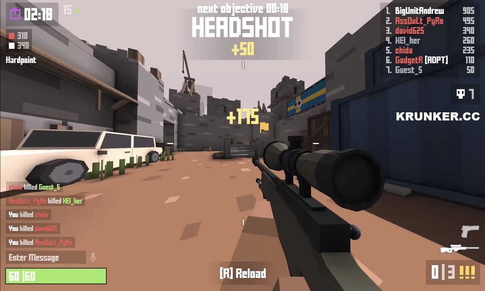
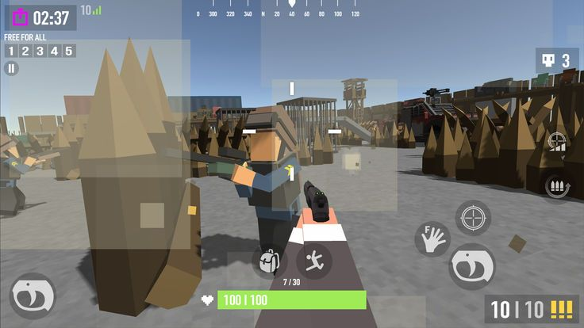
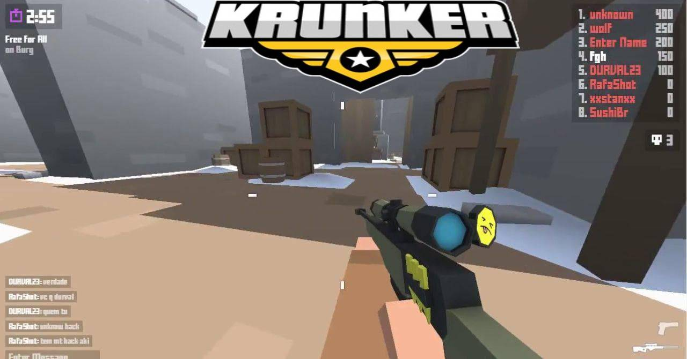
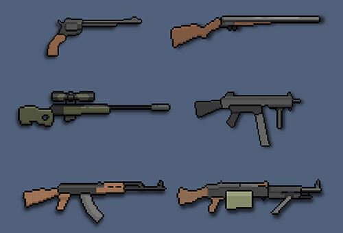
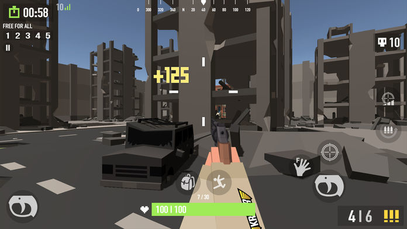

Krunker.io is a browser-based first-person shooter that proves you don't need a high-end gaming PC to enjoy competitive FPS action. The blocky voxel art style gives it a distinctive look, while the tight gameplay loop delivers satisfying gunfights. I spent hours getting demolished before the movement and aiming clicked—but once they did, I was hooked.
🎯 Game Basics

What is Krunker.io?
Krunker.io is a free-to-play first-person shooter .io game with blocky voxel graphics. Players compete in various game modes including Team Deathmatch, Capture the Flag, and more. The fast-paced action and easy accessibility make it popular among casual and competitive gamers alike.
Controls Overview
WASD moves your character. Mouse aims and shoots. Space jumps, Shift sprintes, and Ctrl crouches. R reloads weapons. Learning these controls until they're automatic is the foundation of competitive play.
Health and Respawn
Each class has a specific health pool. When you take damage, seek cover and wait for health regeneration or grab health pickups scattered across maps. Death respawns you at your team's spawn point after a brief delay.
🏃 Movement Mastery

Strafing
The most fundamental movement technique—alternating left and right while shooting makes you harder to hit. Consistent strafing rhythm while maintaining aim at your target separates beginners from skilled players.
Jump Shooting
Jumping while shooting adds vertical unpredictability to your movement. Combine with strafing for three-axis evasion. However, airborne accuracy decreases, so timing jumps carefully matters.
Bunny Hopping
Chain jumps while maintaining momentum for faster map traversal. In combat, bunny hopping makes you a difficult target, though it sacrifices some accuracy. Master this for repositioning between firefights.
Constant movement makes you harder to hit but reduces your own accuracy. Find balance—move when repositioning, plant your feet when going for precision shots.
Map Awareness
Learn map layouts, common chokepoints, and advantageous positions. Knowing where enemies spawn and travel lets you predict their movements and set up ambushes or avoid unfavorable encounters.
Using Cover
Walls, boxes, and terrain features provide cover. Pop out from behind cover to take shots, then retreat when threatened. Peek shooting is essential for reducing incoming damage while maintaining offensive pressure.
👤 Class Selection

Triggerman
The balanced starter class. Assault rifle offers solid damage and manageable recoil. Good for beginners learning game mechanics. Medium health, medium speed, versatile in most situations.
Hunter
High damage, low fire rate sniper class. One or two shots eliminate most enemies. Requires patience and good aim but rewards precision. Play from distance and flanks for maximum effectiveness.
Run N Gun
SMG-focused class with high mobility. Lower damage per bullet but high fire rate compensates at close range. Excellent for aggressive pushers who love close-quarters combat. Low health means play carefully.
Detective
Pistol class with unique wallhack ability revealing enemies through walls briefly. High skill ceiling but devastating in skilled hands. pistol rewards precision over spray-and-pray tactics.
如何选择职业
New players should start with Triggerman for balanced gameplay. Experiment with different classes to find what matches your playstyle—aggressive players favor Run N Gun, patient players excel with Hunter.
🔫 Weapons Guide

Assault Rifle
The most versatile weapon. Reliable damage, manageable recoil, and decent fire rate make it effective at most ranges. Spray control comes with practice—burst fire at distance, full auto up close.
SMG
High fire rate with lower damage per bullet. Dominates close-range encounters but struggles at distance. Pair with aggressive movement and close quarters positioning.
Sniper Rifle
One-shot kill potential with slow fire rate and significant recoil. Requires accuracy and patience. Quick-scoping (scoping immediately after firing) rewards skilled snipers with faster follow-up shots.
Pistol
Low recoil, moderate damage, and fast switch time. Effective as a secondary weapon or primary for skilled pistol users. Master the pistol for situations when your primary runs dry.
Shotgun
Devastating at extremely close range, useless beyond point-blank. Close the distance quickly or get destroyed. High risk, high reward weapon for aggressive players.
⚔️ Combat Tips

Aiming Techniques
Crosshair placement matters more than reaction speed. Keep your crosshair at head level and where enemies commonly appear. Pre-aim corners before peaking. These habits reduce time needed to acquire targets.
Tracking vs. Flick Shots
Tracking follows moving targets smoothly; flicking snaps to targets quickly. Practice both—tracking works for enemies moving predictably, flick shots excel against erratic targets.
Spray Control
Automatic weapons pull upward during sustained fire. Counter by pulling down on your mouse. Burst fire at distance where precision matters, full auto only when enemies are close and accuracy requirements drop.
Audio Awareness
Footsteps and gunfire provide crucial information. Turn up audio to hear enemy approaches. Learning to differentiate sounds helps predict enemy positions and avoid ambushes.
💎 Pro Tips
Practice in offline mode first. Many maps have offline training options. Spend time learning movement and aiming without pressure of live opponents.
Check your sensitivity settings. Higher sensitivity enables faster turns but reduces precision. Find a balance—most pros use medium sensitivity with good mousepad space.
Play objectives in objective modes. In Team Deathmatch, fragging matters. In objective modes, objective play often matters more than kill count. Adapt your priorities to the game mode.
Learn to retreat. Not every fight must be taken. When you're low health or outnumbered, retreat to find health or regroup with teammates. Survival keeps you in the fight longer.
❓ Frequently Asked Questions
What is the best class for beginners?
Triggerman offers the best balance for learning. Assault rifle is versatile, health pool is decent, and speed is manageable. Hunter and Detective require more skill to be effective.
How do I improve my aim?
Practice consistently in training modes or offline matches. Focus on crosshair placement and tracking moving targets. Consider aim trainers for additional practice—they're not cheating, just tools for improvement.
Is Krunker.io free to play?
Yes, completely free with no purchase required. Optional cosmetic purchases exist but provide no gameplay advantage. You can enjoy the full game experience without spending anything.
Can I play with friends?
Yes, join private matches or create parties with friends. Coordinate loadouts and strategies to dominate public matches together.
How do I unlock new classes?
Level up by playing matches and earning XP. Each level unlocks new classes with unique weapons and abilities. Check the class selection screen for unlock requirements.
What sensitivity should I use?
No universal answer—find what feels comfortable. Most players use medium sensitivity allowing precise aiming while enabling 180-degree turns. Test different settings until one clicks.
📝 Related Games to Try
Enjoy FPS combat? Check out Venge.io for class-based shooter action, Surviv.io for battle royale gameplay, or Shell Shockers for egg-shooting fun.
📝 Conclusion
Krunker.io rewards consistent practice and game sense development. Master movement mechanics, learn your preferred class and weapon, and apply combat fundamentals. Victory comes to players who adapt, learn from deaths, and keep improving.
Enter the arena and show them what you've got!
Last updated: June 5, 2026
Written by the iogameguide.com team